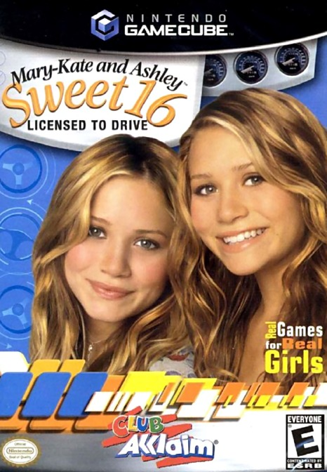
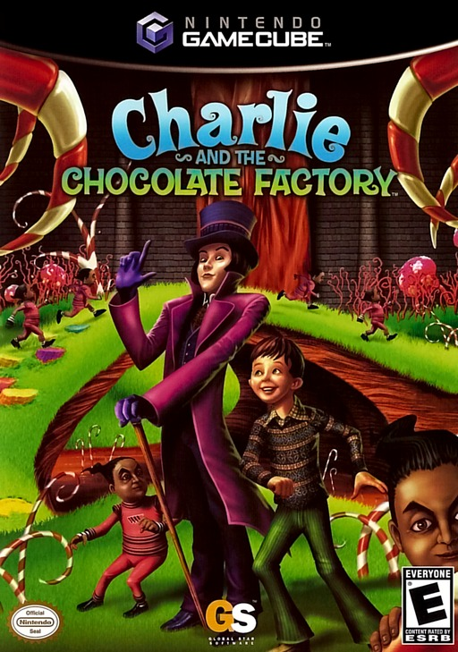

LA CAJITA MORADA... Y LAS LICENCIAS QUE SE ESCAPARON
02
EL CRITERIO
DEL MALO AL PEOR
Contamos en cuantas listas de peores aparece cada juego (TheGamer, WatchMojo, Cultured Vultures, 8bitpickle y GamesRadar). Desempatamos con las notas de la prensa, y a todos, la leyenda del disco. Dejamos afuera lo que ya esta en nuestro Top Mundial.
▶ PREMIO AL JUEGO DONDE GANAS... VIENDO TELEUna mascota virtual donde ves la tele junto a Pikachu y no mucho mas. GameSpot dijo que el juego es debil; GameSpy le puso 1 de 5. Cultured Vultures lo llama de las mascotas virtuales mas caras y superficiales. En Japon, Famitsu: 31 de 40.
04
#9
EN 2 LISTAS

GameCube
TARROVISIONCH 09
NO SIGNAL
Inserta gameplay aqui
MARY-KATE AND ASHLEY: SWEET 16 - LICENSED TO DRIVE
▶ PREMIO AL MARIO PARTY SIN FIESTAUn juego de mesa con minijuegos y la licencia de las gemelas Olsen. IGN lo llamo un claro clon de Mario Party con la licencia pegada encima. Cultured Vultures y 8bitpickle lo ponen entre los peores: minijuegos mal explicados y olvidables.
▶ PREMIO AL BAILE QUE NO SIGUE LA MUSICAUn juego de baile con tapete incluido y modo para contar calorias. IGN dijo que es jugable, pero no divertido, y que los pasos no coinciden con la musica. WatchMojo dice que el timing casi nunca funciona.
06
#7
EN 2 LISTAS

GameCube
TARROVISIONCH 07
NO SIGNAL
Inserta gameplay aqui
CHARLIE AND THE CHOCOLATE FACTORY
GAMECUBE · 2005 · 2K GAMES (DEV. HIGH VOLTAGE SOFTWARE) · CULTURED VULTURES + 8BITPICKLE · METACRITIC 39
▶ PREMIO A LA FABRICA DONDE LO UNICO DULCE ES LA MUSICAMandas a los Oompa Loompas a trabajar en la fabrica de Wonka. Nintendo Power le puso 2,5 de 10 por una camara torpe, y Cultured Vultures habla de graficos con errores y controles que enloquecen. Eso si: IGN elogio la banda sonora.
▶ PREMIO A LA OFERTA QUE TODOS RECHAZARONUn asesino a sueldo de la mafia que debe robar diamantes de la boveda de un casino. IGN le puso 2 de 10 y Nintendo Power, 1,3 de 5. Cultured Vultures dice que imita a El Padrino y Los Soprano sin su profundidad.
▶ PREMIO AL PARQUE DONDE LO DIVERTIDO ES RECOGER BASURARecorres Universal Studios juntando sellos en minijuegos, y para subir a un juego debes juntar basura. IGN lo llamo un lio de metas desordenadas, navegacion torpe y destinos aburridos. Y hay problemas de framerate de los peores de la consola.
▶ PREMIO AL SUPERMAN 64 SUBMARINOUn heroe que nada, pelea y maneja submarinos. TheGamer lo compara con Superman 64, con mala IA y misiones de submarino que no enganchan. Metacritic: 27. GameSpot, 2,3. Game Informer, 2 de 10.
▶ PREMIO AL MURCIELAGO QUE ESPERO CUATRO AÑOS EN LA CUEVAAnunciado en el E3 de 2001 como un mundo abierto, tardo cuatro años y llego como un juego lineal. Game Informer le puso 0,75 de 10 y lo llamo incomprensible y lleno de errores. Metacritic: 29. Eso si: la historia y la musica recibieron elogios.
▶ PREMIO A LA PELOTA DE RISA QUE NO DIO RISADodgeball con los personajes de Pixar y solo siete arenas. IGN dijo que es basico dodgeball, como el que jugabas en el patio del colegio. Game Informer: la falta de variedad apenas lo califica como juego. Aparece en 4 listas de peores.
▶ PREMIO AL PEOR PUNTAJE DE LA HISTORIA DE LA CONSOLAUn beat 'em up con las tres angeles y una camara que no coopera. Metacritic: 23. GameRankings: 24%, el mas bajo de todos los juegos de GameCube. GamesRadar lo puso entre los 50 peores de la historia y dijo que fue peor que la pelicula.
13
ANALISIS DEL TOP
OCHO DE DIEZ TIENEN LICENCIA
Ocho de los diez usan una licencia (peliculas, comics, TV y Nintendo), casi todos salieron entre 2002 y 2004, y Kemco publico dos (Batman: Dark Tomorrow y Universal Studios). Mientras el GameCube tenia obras maestras, las licencias apuradas se colaron a la fiesta.
14
GAME OVER
INSERTA MONEDA PARA CONTINUAR
Coco cierra tocando el tema de Game Over en bateria. ¿Cual fue el peor juego de GameCube que les toco jugar? Cuentanos en los comentarios y cual consola quieren que siga.